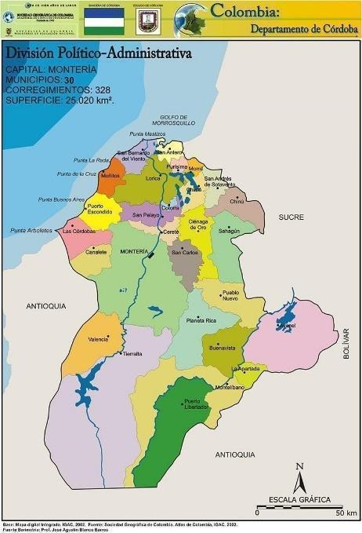
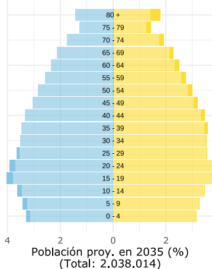
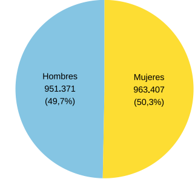
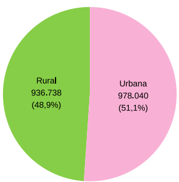
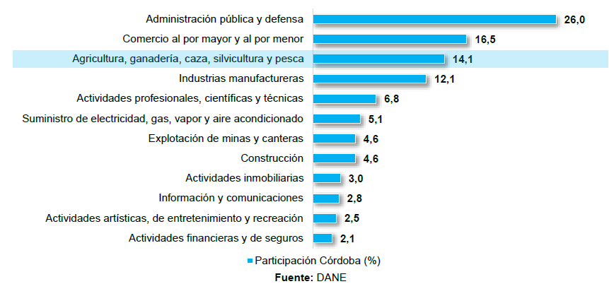
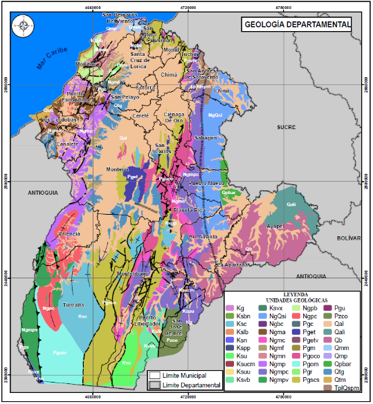
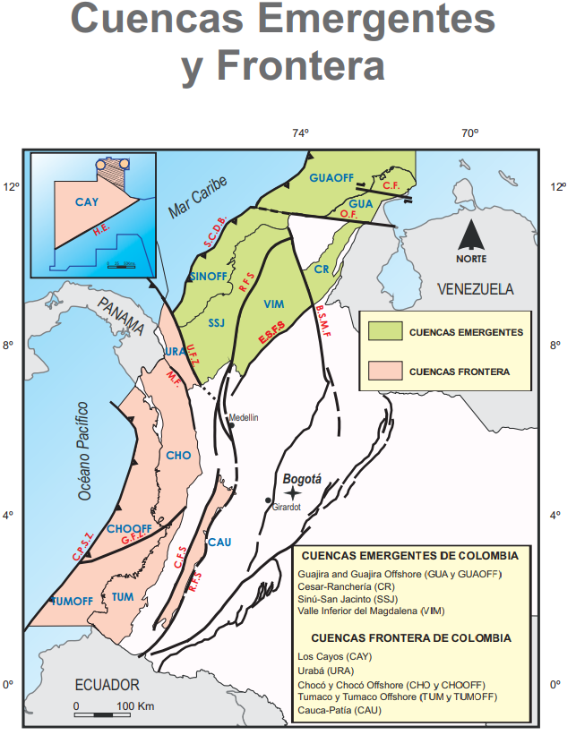

2. CARACTERIZACIÓN TERRITORIAL Y AMBIENTAL
2.1. Ubicación y límites.
El departamento de Córdoba está ubicado en la región Caribe de Colombia, es decir Córdoba se ubica al noroccidente del territorio colombiano. Sus límites geográficos son para la zona Este con los departamentos de Sucre y Bolívar, al Sur y Suroeste con Antioquia, y al Oeste con el mar Caribe (ver Figura 1).


Figura 1 Mapa Político Administrativo del Departamento de Córdoba. Fuente: IGAC (2002).
link: https://www.todacolombia.com/departamentos-de-colombia/cordoba/municipios-division-politica.html
El relieve del departamento de Córdoba se compone de tres zonas principales: las planicies fluviales de los ríos Sinú y San Jorge, que atraviesan municipios como Montería, Lorica y Ayapel. La zona montañosa, que hace parte de la Cordillera Occidental, donde se destacan las serranías de Abibe, Ayapel y San Jerónimo, visibles en municipios como Tierralta y Valencia; y las zonas costero-marinas, localizadas en el norte del departamento, en municipios como San Antero, Moñitos y Los Córdobas. Estas tres unidades definen la geografía y usos del suelo en la región.
2.2. Extensión de superficie (Km2).
El departamento de Córdoba cuenta con una superficie aproximada de 25.020 kilómetros cuadrados, lo que lo convierte en una de las entidades territoriales de tamaño intermedio en el país.
2.3. División político-administrativa.
El departamento de Córdoba presenta una distribución para 30 municipios, la siguiente tabla mencionada el total de los municipios (Ver Tabla 1):
Tabla 1 Municipios del departamento de Córdoba. Fuente: Autor (2025).
| N° Muni | cipio N° Mun | icipio | N° Municipio | N° Mun | icipio | N° M | unicipio N° Municipio | ||||
| 1 | Montería | 6 | Ayapel | 11 | Buenavista | 16 | Canalete | 21 | Cereté | 26 | Chimá |
| 2 | Chinú | 7 | Ciénaga de Oro | 12 | Cotorra | 17 | La Apartada | 22 | Lorica | 27 | Los Córdobas |
| 3 | Momil | 8 | Montelíbano | 13 | Moñitos | 18 | Planeta Rica | 23 | Pueblo Nuevo | 28 | Puerto Escondido |
| 4 | Puerto Libertador | 9 | Purísima | 14 | Sahagún | 19 | San Andrés de Sotavento | 24 | San Antero | 29 | San Bernardo del Viento |
| 5 | San Carlos | 10 | San José de Uré | 15 | San Pelayo | 20 | Tierralta | 25 | Tuchín | 30 | Valencia |
2.4. Población y demografía
La información presentada a continuación fue recopilada a través del Sistema de Estadística Territorial (TERRIDATA), una plataforma del Departamento Nacional de Planeación (DNP) que centraliza datos relevantes para el análisis y la planificación del desarrollo territorial en Colombia.
2.4.1. Habitantes totales.
Según estimaciones del Departamento Administrativo Nacional de Estadística (DANE) para el año 2024, el departamento de Córdoba cuenta con una población aproximada de 1.914.778 habitantes.
La población del departamento de Córdoba se caracteriza por ser mayoritariamente joven, con una base amplia en los grupos de edad entre 0 y 19 años, lo que refleja un alto índice de natalidad. A medida que aumentan las edades, se observa una disminución progresiva en el número de habitantes, lo que indica un proceso de envejecimiento gradual de la población.
2.4.2. Crecimiento poblacional y proyecciones.
La proyección para el año 2035 es de 2.038.014 habitantes, mostrando un crecimiento moderado de la población, acompañado de una transición hacia el envejecimiento. Si bien la franja de edad productiva (20 – 39 años) se amplía, la reducción en la base de la pirámide sugiere una disminución en la tasa de natalidad.
En cuanto a la distribución por género, se evidencia que las mujeres tienden a vivir más que los hombres, siendo más numerosas en los grupos de edad de 70 años en adelante, lo que corresponde con una mayor esperanza de vida femenina. En lo que respecta a la ubicación de la población, se identifica que tiene porcentajes similares en lo que respecta a la zona rural (48,9%) de la urbana (51,1%).
 |
 |
 |
 |
Figura 2 Distribución demográfica del departamento de Córdoba. FUENTE: Tomado de la proyección DANE (2024), pg. 1 y 2.
LINK: https://terridata.blob.core.windows.net/fichas/Ficha_23000.pdf
2.5. Actividades económicas.
SECTORES PRODUCTIVOS PREDOMINANTES.

Figura 3 Participación por actividad económica en el departamento de Córdoba. 2022. Fuente: UPRA-DANE, pg. 8.
De acuerdo con datos de la Unidad de Planificación Rural Agropecuaria (UPRA, 2022), las principales actividades económicas del departamento de Córdoba muestran una alta dependencia del sector público, siendo la administración pública y defensa la que mayor participación tiene en el valor agregado bruto, con un 26%.
En segundo lugar, se encuentra el sector de comercio al por mayor y al por menor, que representa un 16,5%, seguido por el sector de agricultura, ganadería, caza, silvicultura y pesca, con una participación del 14,1%, lo que resalta la relevancia del sector primario en la economía regional.
Las industrias manufactureras contribuyeron con un 12,1% al valor agregado bruto del departamento, consolidándose como un pilar del desarrollo industrial en la región. Otros sectores con participación relevante fueron las actividades profesionales, científicas y técnicas con un 6,8%, el suministro de energía eléctrica, gas y agua con un 5,1%, y tanto la explotación de minas y canteras como la construcción, cada una con un 4,6%.
En contraste, sectores como las actividades inmobiliarias, las comunicaciones, el entretenimiento y los servicios financieros registraron una participación inferior al 3,5% cada uno, aunque siguen representando un componente importante dentro de la estructura económica departamental.
2.6. Instrumentos territoriales de ordenamiento, planificación ambiental y gestión del riesgo.
- Plan de desarrollo departamental.
Plan de Desarrollo Departamental “Córdoba lo tiene todo para estar a otro nivel 2024-2027”
- Planes municipales de ordenamiento territorial.
Tabla 2 Instrumentos de ordenamiento territorial municipal.
| Municipio Inst | rumento (POT/PBOT/EOT) Año de v | igencia Estado (vige | nte/desactualizado) |
|---|---|---|---|
| Montería | POT | 2021 | Actualizado |
| Ayapel | PBOT | 2015 (ajuste) / 2014-2029 (PBOT publicado) | Actualizado |
| Buenavista | EOT | 2016 - 2027 | Actualizado |
| Canalete | EOT | 2001 - 2010 | Desactualizado |
| Cereté | PBOT | 2012 - 2023 | Actualizado |
| Chimá | EOT | 2003 - 2012 | Desactualizado |
| Chinú | PBOT | 2000 - 2010 | Desactualizado |
| Ciénaga de Oro | PBOT | 2019 | Desactualizado |
| Cotorra | EOT | 2004 - 2012 | Desactualizado |
| La Apartada | EOT | 2017 | Desactualizado |
| Lorica | POT | 2012 - 2015 | Desactualizado |
| Los Córdobas | EOT | 2014 - 2027 | Actualizado |
| Momil | EOT | 2001 | Desactualizado |
| Montelíbano | PBOT | 2019 | Actualizado |
| Moñitos | PBOT | 2019 - 2031 | Actualizado |
| Planeta Rica | PBOT | 2017 | Desactualizado |
| Pueblo Nuevo | PBOT | 2017 - 2031 | Actualizado |
| Puerto Escondido | PBOT | 2016 - 2027 | Actualizado |
| Puerto Libertador | EOT | 2014 - 2019 | Desactualizado |
| Purísima | EOT | 2020 - 2023 | Desactualizado |
| Sahagún | POT | 2001 - 2014 | Desactualizado |
| San Andrés de Sotavento | PBOT | 2001 - 2010 | Desactualizado |
| San Antero | PBOT | 2007 | Desactualizado |
| San Bernardo del Viento | PBOT | 2002 | Desactualizado |
| San Carlos | EOT | 2005 - 2019 | Desactualizado |
| San José de Uré | EOT | 2016 - 2019 | Desactualizado |
| San Pelayo | PBOT | 2000 - 2009 | Desactualizado |
| Tierralta | PBOT | 2011 - 2023 | Desactualizado |
| Tuchín | PBOT | 2015 - 2027 | Actualizado |
| Valencia | PBOT | 2017 | Desactualizado |
- Planes Ambientales.
- Plan de Gestión Ambiental Regional, 2020-2031.
Elaborado por: Corporación Autónoma de los Valles del Sinú y San Jorge.
Link: https://cvs.gov.co/download/775/participa/16159/plan-de-gestion-ambiental-regional-2020-2031-2.pdf
- Planes de Ordenación y Manejo de Cuencas Hidrográficas (POMCA).
El recurso hídrico dentro de la jurisdicción de la Corporación, se encuentran definidas por el Instituto de Hidrología, Meteorología y Estudios Ambientales - IDEAM, siete (7) cuencas hidrográficas conformadas por: Rio Alto Sinú, Rio Medio-Bajo Sinú, Rio Alto San Jorge, Rio Bajo San Jorge, Rio Canalete- Rio Los Córdobas, Rio Mangle y otros arroyos directos del Caribe y Arroyos directos Golfo de Morrosquillo, éste último sólo una pequeña porción del área geográfica está dentro del departamento de Córdoba.
Tabla 3 Instrumentos POMCA en el departamento. Fuente: CVS (2024)
| Nombre POMCA Códi | go Hectárea | s Fase | LINK | |
| Rio Canalete, Los Cordobas y otros Arroyos - NSS | 1204-1 | 119.138 | Formulación | https://cvs.gov.co/convocatoria-observaciones-pomca-rio-canalete-rio-los-cordobas-y-otros-arroyos-1204-1/ |
| Rio Mangle y otros arroyos directos al Caribe - NSS | 1204-02 | 62.781 | No identificada | |
| Rio Alto Sinú | 1301 | 376.410 | Formulación | https://www.anla.gov.co/documentos/biblioteca/27-01-2021-anla-rash-rio-sinu-alto-san-jorge.pdf |
| Río Medio y Bajo Sinú - 2SZH | 1303 | 941.476 | Formulación | https://www.anla.gov.co/documentos/biblioteca/27-01-2021-anla-rash-rio-sinu-alto-san-jorge.pdf |
| Rio San Jorge | 2502-01 | 994.778 | Formulación | https://www.corpomojana.gov.co/download/pomca/pomca-documento-2502-01.pdf |
- POMIUAC/Planes de Ordenación y Manejo Integrado de la Unidad Ambiental Costera Unidad Ambiental Costera Estuarina del Río Sinú y el Golfo de Morrosquillo.
La costa cordobesa se extiende desde la punta de Arboletes en límites con Antioquia hasta Punta de Piedra en límites con Sucre, sobre el golfo de Morrosquillo, recorriendo los municipios de Los Córdobas, Puerto Escondido, San Bernardo del Viento, Moñitos y San Antero. En total son 124 km de costa y 6 km en promedio de anchura. Las zonas costeras, como componentes esenciales e integrales de la tierra, se constituyen en áreas críticas para el bienestar ambiental, económico y social de las naciones que las poseen (Kay y Alder, 2005; CicinSain et al., 2006).
Estos espacios con características únicas, dadas sus condiciones de intercambio de materia y energía entre la tierra, atmósfera y mar, que propician el desarrollo de ecosistemas y hábitats costeros (deltas, estuarios, lagunas, manglares, playas, pantanos de agua dulce, ríos y bosque costeros); que proporcionan valiosos productos y servicios para cubrir las necesidades económicas y de subsistencia para comunidades locales y externas (Gilman et al., 2008).
Tabla 4 Instrumento de Adaptación al Cambio Climático. Fuente: Autor (2025).
| INSTRUMENTO FECH | A DE ELABORACIÓN ÚLTIMA A | CTUALIZACIÓN LINK | |
| Plan Departamental de Adaptación al Cambio Climático para el Departamento de Córdoba 2016-2027. | 2016 | 2016 | https://aquadocs.org/bitstream/handle/1834/6633/Cartilla-UAC_Morrosquillo.pdf |
- Instrumentos de Gestión del Riesgo de desastres.
Tabla 5 Instrumentos departamentales de planificación en Gestión del Riesgo de Desastres.
| TIPO DE INSTRUMENTO FECH | A DE ELABORACIÓN ÚLTIMA A | CTUALIZACIÓN LINK | |
| Plan Departamental para la Gestión del Riesgo de Desastre. (PDGRD) | 2012 | 2022 | https://www.cordoba.gov.co/loader.php?lServicio=Tools2&lTipo=descargas&lFuncion=visorpdf&id=28471&pdf=1 |
| Estrategia Departamental de Respuesta (EDRE) | 2012 | 2024 | https://www.cordoba.gov.co/loader.php?lServicio=Tools2&lTipo=descargas&lFuncion=visorpdf&id=28470&pdf=1 |
2.7. Caracterización física del territorio.
2.7.0. Características Geológicas
Para el componente geológico del departamento fue necesario la revisión de información disponible en la entidad técnica competente, es decir, el Servicio Geológico Colombiano (SGC) El Servicio Geológico Colombiano (SGC) ha desarrollado un geoportal para brindar la información geo científica del país, por ejemplo, con la cartografía geológica de Colombia a escala 1:1’500.000 (Ver la Figura 4), y en una escala más detallada, por ejemplo, la plancha geológica 62 – La Ye, la cual abarca un área aproximada de 1.800 kilómetros cuadrados; esta zona se encuentra ubicada en la región de frontera entre los departamentos de Córdoba y Sucre.
A continuación, se anexa una visualización del geoportal o portal web elaborado por técnicos y expertos del Servicio Geológico Colombiano (SGC), para el uso y conocimiento libre de información geológica de todo el territorio colombiano, a escala 1:1’500.000. El link de acceso al portal web se anexa en las referencias del documento.

Figura 4 MAPA GEOLOGICO DE COLOMBIA, ESCALA 1:1’500.000. FUENTE: Gómez, J., Montes, N.E. & Marín, E., compiladores. 2023.

Figura 5 Mapa geológico de Córdoba, pagina 74. FUENTE: Plan Departamental de Gestión del Riesgo de Desastres - PDGRD (2022 - 2031), pg. 82.
Link: https://drive.google.com/drive/folders/1xR_GkW_4eMc55gBeZLUSJ7mjdjfWr0x8
El mapa elaborado por la Corporación del Valle del Sinú Corporación Autónoma Regional de los Valles del Sinú y del San Jorge (CVS) muestra una gran variedad de formaciones geológicas, lo que significa que en Córdoba hay muchas clases de rocas y suelos que se formaron en diferentes épocas de la historia de la Tierra. Existe una diversidad de rocas en el departamento y está compuesto por más de 30 unidades geológicas diferentes, cada una representada con un color distinto.
Estas unidades geológicas incluyen rocas volcánicas, sedimentarias, ígneas y metamórficas, lo que indica una historia geológica compleja y muy rica.
Al sur y suroccidente de Córdoba (frontera con Antioquia y el municipio de Tierra Alta), se observa un predominio de colores verdes, azules y marrones oscuros, que corresponden a rocas antiguas y montañosas. Mientras que, al norte y noreste (como Montería, Lorica, Sahagún), hay colores más uniformes, como los beige y grises claros, lo que indica zonas más planas y jóvenes, como las llanuras costeras y valles, existen deposición de sedimentos del río San Jorge y sus tributarios, además de los depósitos asociados al sistema de ciénagas de Ayapel y sus alrededores.
2.7.1. Características geomorfológicas generales.
El departamento de Córdoba forma parte de la Gran Llanura del Caribe y presenta dos grandes zonas topográficas o tipos de paisaje:
- Zona de planicies o sábanas
Esta zona está formada principalmente por tierras planas con algunas colinas bajas, cuya altitud no supera los 100 metros sobre el nivel del mar (msnm). El suelo está compuesto por materiales arcillosos y arenosos, propios del Grupo geológico Sincelejo. La distribución al norte y centro: predominan los valles aluviales del Sinú y San Jorge, con espacios planos y bien drenados.
En esta región los valles aluviales de los ríos Sinú y San Jorge, así como la franja costera del norte del departamento son una zona apta para actividades agropecuarias, pero también sensible a inundaciones en épocas de lluvia intensa.
(Fuente: CVS, 2022–2031)
- Zona montañosa y de colinas
Esta región está ubicada al sur y suroccidente de Córdoba y corresponde a las estribaciones (parte final) de la Cordillera Occidental. Se caracteriza por tener cerros con cimas redondeadas, lo que indica la presencia de rocas más resistentes a la erosión, como las de las formaciones Ciénaga de Oro, Porquera y el Miembro Superior del Grupo Sincelejo. Aquí se encuentran pendientes entre 16° y 25° y altitudes que van de 100 a 200 msnm, lo que representa un relieve más quebrado y complejo. Estas condiciones requieren especial atención para la gestión del riesgo y el uso del suelo. (Fuente: SGC, 2013)
2.7.2. Características Generales del Uso del Suelo.
Es fundamental conocer cómo se usa el suelo en el departamento de Córdoba, ya que esta información está relacionada con los recursos naturales y las reservas del territorio. Según la Corporación Autónoma Regional de los Valles del Sinú y del San Jorge (CVS), en el año 2023, el departamento contaba con un total de 1.874.552 hectáreas destinadas a actividades agrícolas, lo que representa el 75% del área total del departamento. Por otro lado, el 6,2% del territorio está cubierto por bosques naturales o zonas que no se usan para la agricultura, y el 18,8% corresponde a áreas protegidas por la ley, en las que no se permite el uso agropecuario.
A continuación, se muestra la distribución del uso del suelo en Córdoba:
| Uso de Suelo Supe | rficie (Has) |
| Frontera agrícola nacional | 1.874.552 |
| Bosque naturales y áreas no agropecuarias | 155.189 |
| Exclusiones legales | 470.118 |
Tabla 6. Tipos de uso de suelo en el Departamento de Córdoba. Fuente: CVS (2023)
2.7.3. Características de la Geología Económica.
En los primeros años del siglo XXI, el sector agropecuario sigue siendo el de mayor participación dentro del PIB del departamento de Córdoba, y la ganadería bovina su principal actividad económica. Por su parte, desde la década de 1980 la minería se convirtió en la segunda actividad productiva del departamento, jalonada esencialmente por la explotación de los yacimientos de ferroníquel. (Fuente: Banco de la República, 2004)
Es importante resaltar que, desde el 2014, el sector minero-energético en cabeza del Ministerio de Minas y Energía ha venido desarrollando proyectos encaminados al fortalecimiento de capacidades respecto a la Gestión del Riesgo de Desastres. A lo largo de las últimas décadas, el Estado ha realizado avances sobre la identificación, caracterización y priorización de factores del riesgo del sector, tanto desde la óptica de rol pasivo como activo, y la participación progresiva en las instancias de coordinación del Sistema Nacional de Gestión del Riesgo de Desastres (SNGRD). Fuente: Política de Gestión del Riesgo de Desastres del sector minero-energético, 2021.
2.7.4. Características de los Yacimientos Minerales.
Según Viloria De La Hoz: La economía minera en el departamento de Córdoba está constituida por la explotación de cuatro recursos: Ferro-níquel, oro, gas natural y carbón. En el periodo 1994-2001 la actividad minera, jalonada por la producción minera de ferroníquel, registrando a una tasa de 9.3% promedio anual; mientras que en el año 1998 la minería departamental tuvo un crecimiento del 38%. El carbón de Córdoba es demandado por la planta de ferroníquel de Cerro Matoso, y la industria cementera de la región Caribe. (Fuente: Viloria de la Hoz, J., 2004)
En relación con la actividad minera, según el reporte de la Agencia Nacional de Minería (ANM), en Córdoba para 2019, en el catastro minero se encuentran vigentes 115 títulos que corresponde a un 4,34% del total de títulos en Colombia, distribuidos en 19 municipios, con una extensión de 180.186,16 hectáreas, lo que corresponde a un 7,51 % de la extensión total del departamento. El 40% de estos títulos es mediana minería, el 29,4% pequeña minería, 23% autorizaciones temporales y 7,6% de gran minería.
Así mismo, según títulos mineros concesionados en Córdoba están divididos por un 44,76% de materiales de construcción, un 25,71% de oro, metales preciosos y cobre, un 14,29% de Carbón, un 11,43% de otros minerales como calizas, arenas y gravas, y un 3,81% de níquel (Ordenanza 0009, 2020).
2.7.5. Características de los Yacimientos de tipo Hidrocarburos.
Según el Acuerdo 11 de 2008 de la Agencia Nacional de Hidrocarburos (ANH) se establece un marco metodológico estandarizado para la técnica de recursos y reservas de hidrocarburos en Colombia. Este acuerdo, expedido por el Consejo Directivo de la ANH, define la forma, contenido, plazos y métodos de valoración de dichos recursos y reservas energéticas.
Para Colombia se establecen actualmente 23 cuencas sedimentarias identificadas con potencial petrolero y para hidrocarburos no convencionales en Colombia. Entre ellas, destacan la cuenca Sinú‑San Jacinto por sus reservas de gas no convencional (CBM y áreas en exploración), mientras que otras como las del Magdalena y Llanos Orientales son ya cuencas maduras con exploración convencional y no convencional en desarrollo. La cuenca sedimentaria correspondiente al departamento de Córdoba es la cuenca Sinú-San Jacinto (SSJ) con 69.221 kilometros cuadrados, 205 pozos y 3 campos de explotación de gas. (Ver la Figura 6)

Figura 6 Cuencas sedimentaria Sinú-San Jacinto (SSJ) en el departamento de Córdoba. FUENTE: ANH (2011)
Mediante el Acuerdo 04 de 2017, la Agencia Nacional de Hidrocarburos (ANH) abrió la posibilidad a los interesados de acceder a 15 áreas continentales disponibles, ubicadas en la cuenca sedimentaria Sinú-San Jacinto, con el fin de desarrollar actividades de exploración y producción de hidrocarburos.
En un inicio, las primeras actividades de explotación de gas natural permitieron identificar yacimientos en los municipios de Sahagún y Chinú. Sin embargo, según el Informe de Reservas y Recursos 2023, elaborado por la Agencia Nacional de Hidrocarburos (ANH) y con base en los avisos de descubrimientos importantes de gas entre 2022 y 2024, se reportaron nuevos yacimientos en los municipios de Pueblo Nuevo y Sahagún. Estos hallazgos están siendo desarrollados por empresas operadoras como CLEANENERGY RESOURCES S.A.S., CNE OIL & GAS, entre otras, las cuales contribuyen al desarrollo del gasoducto El Jobo – Mamonal, infraestructura que transporta gas hacia la refinería de Cartagena. (Ver Figura 7)

Figura 7 Mapa de las redes de gasoductos en la costa caribe. FUENTE: Promigas (2025)
LINK: https://www.promigas.com/Beo/Paginas/ProcedimientosOperacionales/Mapa-del-gasoducto.aspx